From the Serengeti's endless plains to Zanzibar's reef-lined beaches — here's the full GUX Safaris map, organized so you can actually plan a trip around it.
Tanzania's classic safari route — big skies, big cats, and the world's most famous crater.
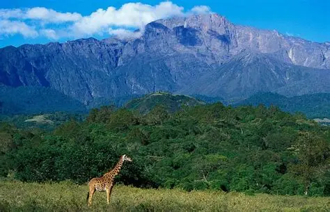
A compact park in GUX Safaris' backyard — Mount Meru, the Momella Lakes, giraffe and colobus monkeys, and an easy half-day safari from town.
Explore Arusha
Tanzania's second-highest peak and Kilimanjaro's quieter, steeper cousin — a 3-4 day climb through forest, moorland, and a dramatic ash cone with far fewer trekkers.
Ask us about thisAfrica's rooftop. Six routes, five climate zones, one unforgettable sunrise at Uhuru Peak. We run Machame, Marangu, Lemosho and more.
Explore Mount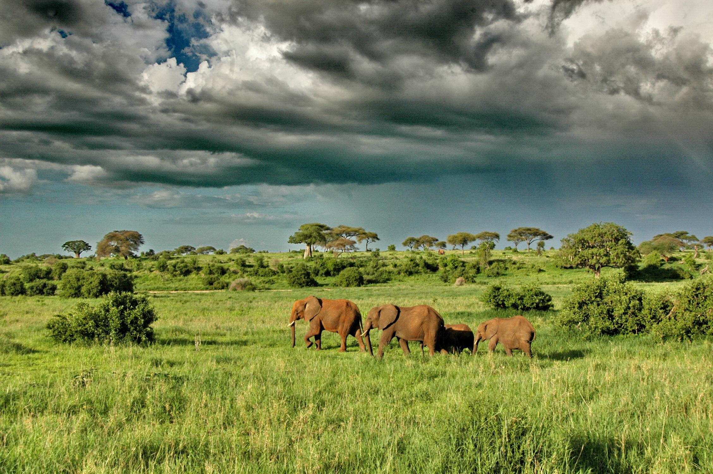
Endless plains, the Great Migration, and the highest big-cat density in Africa. The park every safari list starts with.
Explore Serengeti
A collapsed volcanic caldera packed with wildlife in a single, walled-in ecosystem — one of the most reliable places on Earth to see the Big Five in a day.
Explore Ngorongoro
Baobab-studded plains and Tanzania's biggest elephant herds, especially in the dry season when the Tarangire River is the only water around.
Explore Tarangire
Tree-climbing lions, flamingo-pink shallows, and dense groundwater forest packed into a small, scenic park below the Rift Valley escarpment.
Explore Lake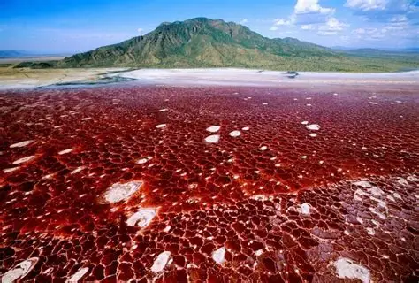
A blood-red soda lake beneath the active Ol Doinyo Lengai volcano — flamingo breeding grounds and some of Tanzania's starkest, most alien scenery.
Explore Lake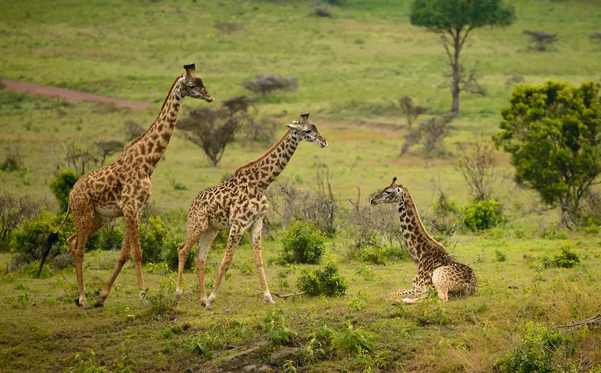
An underrated dry-country park bordering Kenya's Tsavo, home to black rhino and wild dog sanctuaries and wide-open acacia savanna.
Ask us about thisWilder, quieter parks for travelers who want Tanzania without the crowds.
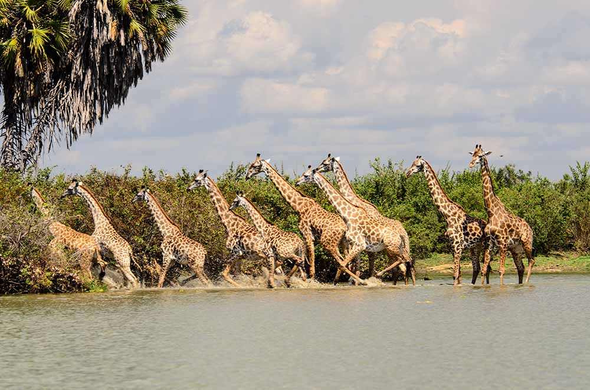
Africa's largest game reserve turned national park — boat safaris on the Rufiji River alongside game drives and walking safaris, with a fraction of the northern circuit's crowds.
Explore Nyerere
Tanzania's largest national park and one of Africa's great wild-dog and lion strongholds, where the Great Ruaha River draws game through the dry season.
Explore Ruaha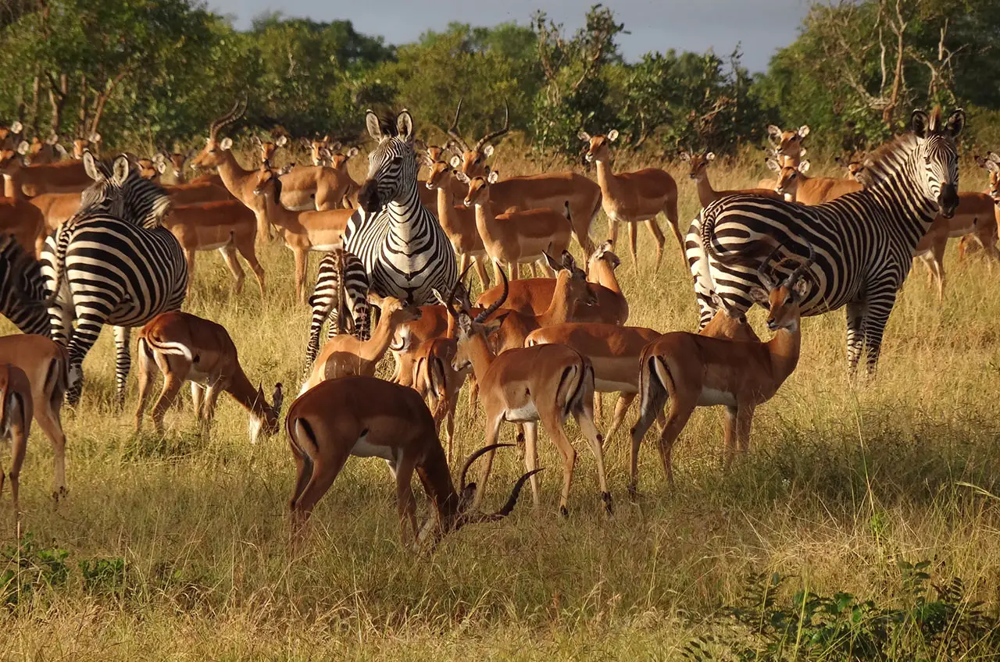
The closest major park to Dar es Salaam — open floodplains often compared to the Serengeti, easily paired with Udzungwa or Ruaha.
Explore Mikumi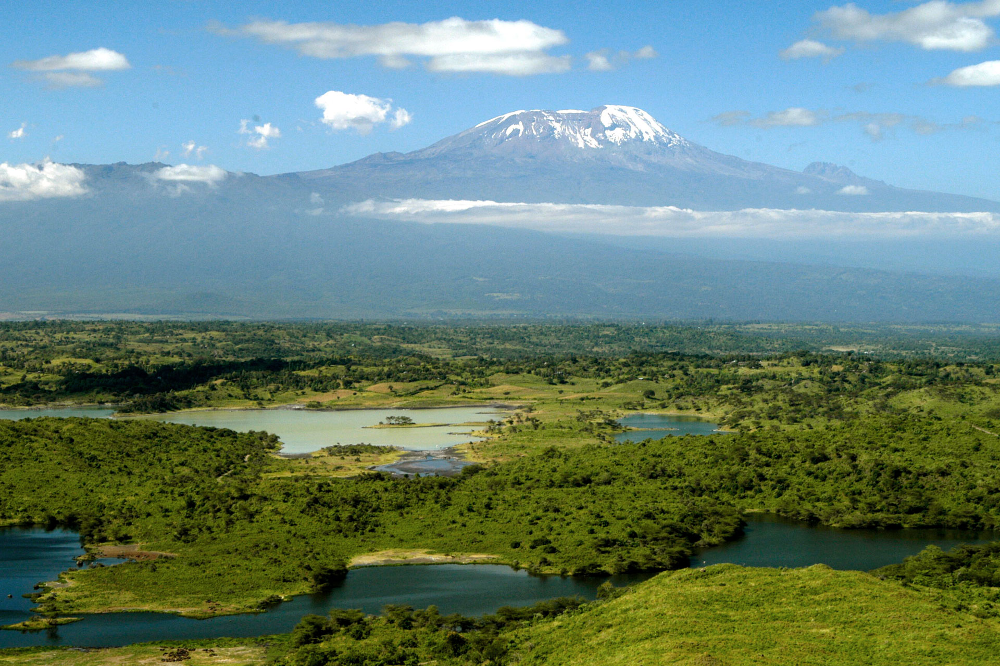
Tanzania's only park with an Indian Ocean beachfront — genuinely rare, walk off a game drive straight onto the sand.
Ask us about this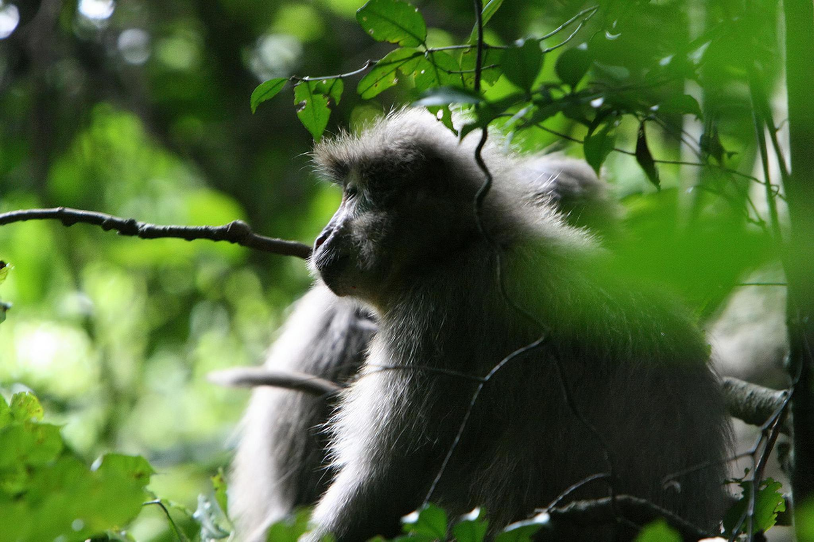
Rainforest, waterfalls, and primates found nowhere else on Earth — Tanzania's answer to a tropical hiking park, best explored on foot.
Explore Udzungwa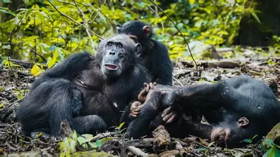
Jane Goodall's original research site on Lake Tanganyika — chimpanzee trekking through steep forest, reached only by boat.
Explore GombeRemote, boat-access-only chimpanzee trekking against a backdrop of white-sand beaches on Lake Tanganyika — one of Africa's most beautiful and hardest-to-reach parks.
Ask us about this
Tanzania's wildest and least-visited major park — dry-season hippo and crocodile congregations that rival anywhere in Africa, and almost no other vehicles.
Ask us about thisA forested island in Lake Victoria built around walking safaris, birding, and a pioneering chimpanzee reintroduction project.
Ask us about thisTanzania's smallest national park, a short boat ride from Mwanza — an easy half-day of walking safari and lake views.
Ask us about this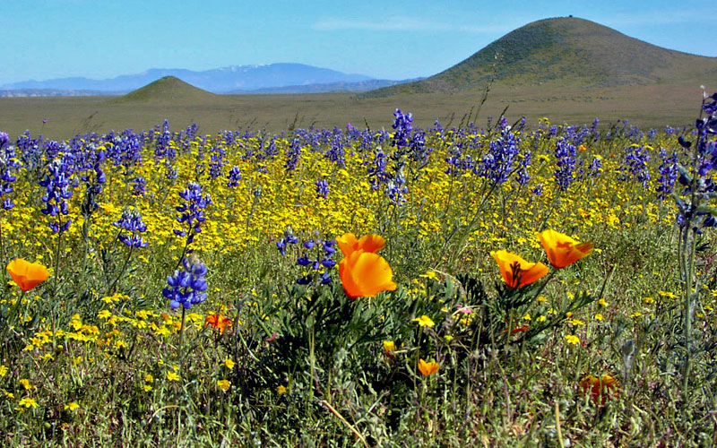
The 'Serengeti of Flowers' — a high-altitude plateau bursting into a carpet of wild orchids and rare blooms every rainy season.
Explore KituloWhite sand, turquoise water, centuries of Swahili and spice-trade history.
A UNESCO World Heritage old town of coral-stone buildings, carved doors, and spice-scented alleys — Zanzibar's cultural heart.
Ask us about thisZanzibar's liveliest beach town on the northern tip — powder-white sand, sunset dhow cruises, and the island's best swimming beaches.
Ask us about thisJust south of Nungwi, with no tidal drop-off — swimmable at any hour, and home to Zanzibar's famous full-moon beach parties.
Ask us about thisThe east coast's kitesurfing capital — steady trade winds, shallow turquoise lagoons, and a laid-back beach-town pace.
Ask us about thisA quieter stretch of east-coast beach village where seaweed farmers still work the tidal flats at low tide.
Ask us about thisA relaxed northeast beach with some of the island's best reef diving and snorkeling just offshore, near Mnemba Atoll.
Ask us about thisLong stretches of white sand on the northeast coast, home to some of Zanzibar's larger resorts and calm swimming water.
Ask us about thisA small, sheltered cove on the east coast — calm, shallow, and one of the island's most photogenic swimming bays.
Ask us about thisA south-coast fishing village and the departure point for dolphin-watching and snorkeling trips.
Ask us about thisA protected coral atoll off the northeast coast — some of the best snorkeling and diving in East Africa.
Ask us about thisA private coral park and one of Africa's oldest marine protected areas, plus a rare coastal forest and giant coconut crabs.
Ask us about thisA short boat ride from Stone Town, home to giant Aldabra tortoises and a historic former quarantine station.
Ask us about thisGuided walks through working plantations of clove, nutmeg, cinnamon, and vanilla — the trade that gave Zanzibar its name.
Ask us about thisStone Town's waterfront night market — Zanzibari street food, grilled seafood, and sugarcane juice as the sun goes down.
Ask us about thisZanzibar's lush, hilly, far-less-visited sister island — dense clove forests and some of the region's most pristine diving.
Ask us about thisFor the ones who'd rather earn the view — mountains, waterfalls, and life on foot or water.
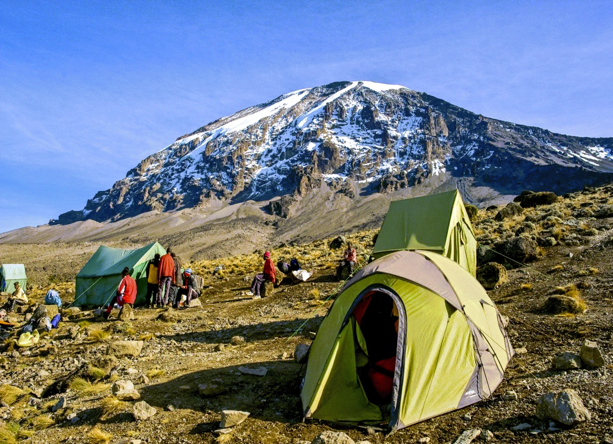
Machame, Marangu, Lemosho, Rongai, and Umbwe — we'll help you pick the route that matches your timeline, budget, and acclimatization needs.
Explore KilimanjaroA 3-4 day climb often used as Kilimanjaro acclimatization — forest, buffalo and giraffe on the lower slopes, then a knife-edge summit ridge.
Ask us about this
Cool, misty highlands near Lushoto with village-to-village hiking, waterfalls, and some of Tanzania's best community-based tourism.
Ask us about thisAn active volcano sacred to the Maasai — a tough overnight climb rewarded with a crater rim view over Lake Natron at sunrise.
Ask us about thisSanje Falls in Udzungwa and Materuni Falls near Kilimanjaro are the two we send hikers to most — both pair well with a coffee-farm visit.
Explore Waterfall
Guided, armed walking safaris in Ruaha, Nyerere, and Rubondo — the slowest, closest way to read tracks and understand the bush.
Explore WalkingFollow habituated chimp communities through steep forest in Gombe or remote Mahale — book well ahead, permits are limited daily.
Explore Chimpanzee
Paddle the Rufiji in Nyerere or drift the Great Ruaha — a quiet, low-impact way to get close to hippos, crocs, and waterbirds.
Explore CanoeingMnemba Atoll, Pemba's reef walls, and Chumbe's marine park cover everything from easy snorkeling to serious wreck and drift diving.
Ask us about thisTell us how many days you have and what you're after — we'll build the route across these parks and islands that actually fits.
Talk to GUX Safaris